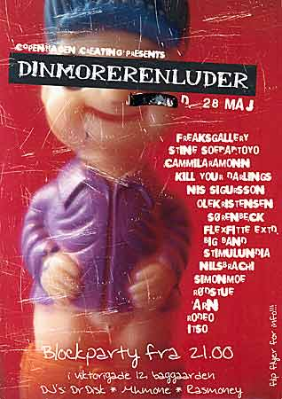

| dunst recommends this event | 28. Maj - 2004 |
 |
|
| "Din mor er en luder", er et kunstprojekt med udgangspunkt i Vesterbros gadeliv. Et projekt, der skal strække sig over en weekend og som skal skrabe en sum penge sammen til hjemløse, narkomaner og prostituerede på Vesterbro. Fernisering kl 17 til 21 Læs mere på: http://dinmorerenluder.dk Stimulundia fra dunst udstiller med foto kunst, og er en af DJ'sne til efterfesten Blockparty kl. 21:00 Viktorigade 12, baggården. |
|